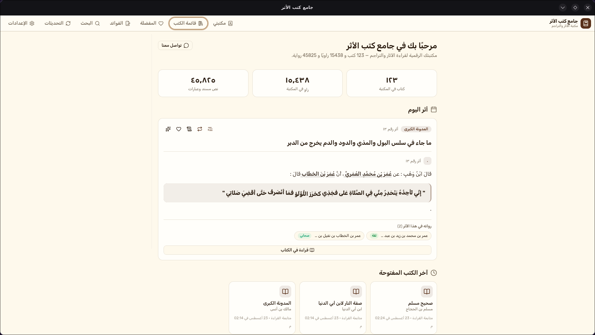
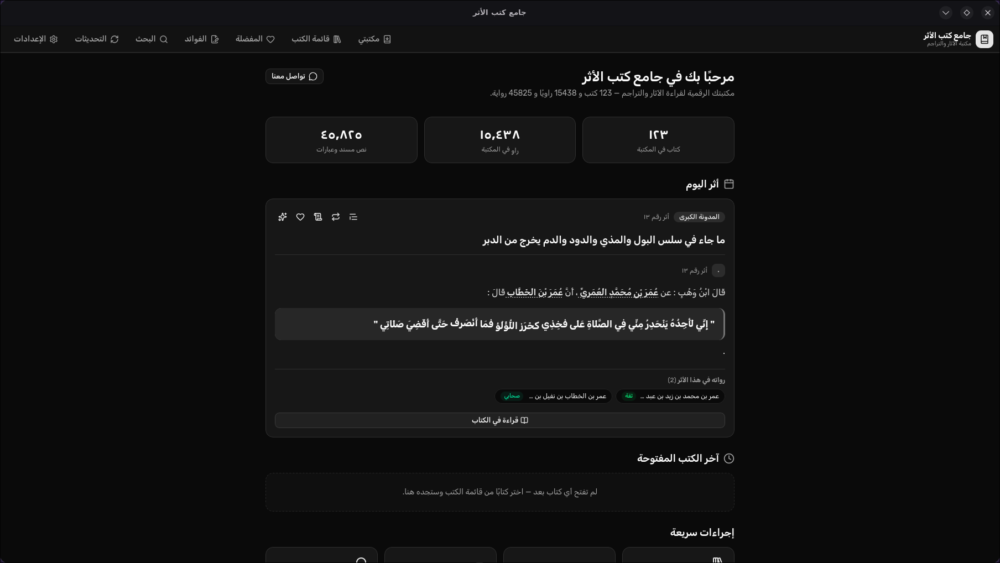

يعمل بالكامل دون اتصال بالإنترنت (Offline-First)
حمّل الكتب وقواعد البيانات مرة واحدة واستمتع بالقراءة والبحث والتخريج السريع في أي وقت وأي مكان دون الحاجة لأي اتصال بالإنترنت.
مكتبة حديثية شاملة تجمع أمهات كتب الآثار والمصنفات، ببحث ذكي في المتون والأسانيد، وتخريج آلي للألفاظ، وتراجم مفصلة للرواة، خفيف وسريع ويعمل دون اتصال.


تجربة متكاملة مصممة بعناية لقراءة وبحث وتحقيق الأحاديث والآثار النبوية والآثار عن السلف.
حمّل الكتب وقواعد البيانات مرة واحدة واستمتع بالقراءة والبحث والتخريج السريع في أي وقت وأي مكان دون الحاجة لأي اتصال بالإنترنت.
محرك بحث عربي فائق السرعة يبحث في المتون والأسانيد ويتجاهل علامات التشكيل وفروق الهمزات للوصول للأثر المطلوب فوراً.
محاذاة آلية دقيقة للألفاظ والزيادات بين الروايات المختلفة مع تلوين الفروق ونسبة المطابقة.
روابط تفاعلية لجميع رواة السند مع شارات مراتبهم (صحابي، ثقة، مقبول...)، وتراجم مفصلة مستخرجة من أمهات كتب التراجم كـ «تهذيب الكمال».
دوّن تعليقاتك وفوائدك بمحرر Markdown متكامل، واحفظ فواصل القراءة والمفضلة واسترجعها بسهولة.
تحكم كامل بحجم الخط، خيارات إظهار التشكيل أو إخفائه، فتح كتب ومواضع متعددة في تبويبات مستقلة، ومظهر داكن وفاتح مريح للعين.
جرب بنفسك كيف يقوم ��لتطبيق بمقارنة متون الأحاديث وإبراز الزيادات والنواقص وفروق الألفاظ فورياً.
تصميم عربي مريح يجمع بين أصالة المحتوى وسلاسة برمجيات سطح المكتب الحديثة.
لوحة تحكم ترحيبية أنيقة تعرض «أثر اليوم»، إحصاءات مكتبتك، وسجل استئناف القراءة فورياً.
متاح لكافة أنظمة التشغيل الرئيسية، ويتم تحديث ملفات التحميل تلقائياً مع كل إصدار جديد.
متوافق مع معالجات Intel و AMD و Snapdragon ARM64
حزم أصلية لمعالجات Apple Silicon (M1/M2/M3/M4) و Intel
حزم deb و rpm و AppImage و tar.gz لـ Arch Linux
tar -xf Athar_1448.10.3_amd64.tar.gz --one-top-level && cd Athar_1448.10.3_amd64 && makepkg -si